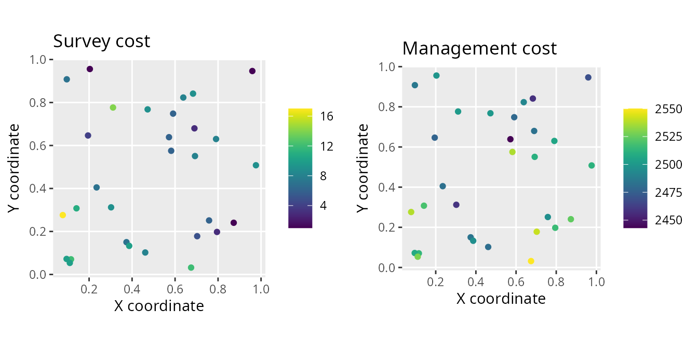
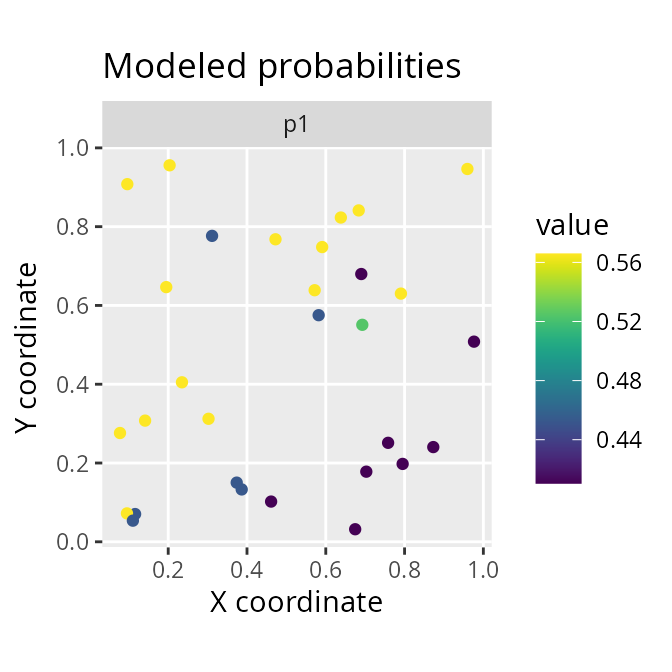

surveyvoi: Survey Value of Information
Jeffrey O. Hanson
2020-12-01
Source:vignettes/surveyvoi.Rmd
surveyvoi.RmdIntroduction
The funding available for conservation are limited. To ensure that conservation funds are allocated cost-effectively, conservation plans (termed prioritizations) can be developed – using a combination of economic, biodiversity, and land-use data – to prioritize a set of sites for conservation management (e.g. protected area establishment). However, existing data on biodiversity patterns are incomplete. As a consequence, prioritizations can potentially be improved by collecting additional data. Specifically, ecological surveys can be conducted in sites to learn more about which species are present within them. However, conducting ecological surveys reduces the funds available for conservation management. Thus decision makers need to strategically allocate funding for surveying sites and managing them for conservation—this is not a trivial task.
The surveyvoi package is a decision support tool for prioritizing sites for ecological surveys based on their potential to improve plans for conserving biodiversity (e.g. plans for establishing protected areas). Given a set of sites that could potentially be acquired for conservation management – wherein some sites have previously been surveyed and other sites have not – this package provides functionality to generate and evaluate plans for additional surveys. It provides functionality to generate plans using various conventional approaches (e.g. expected species richness) and directly maximizing return on investment using optimization algorithms. Plans for conducting ecological surveys are evaluated using value of information analysis, which explicitly accounts for the cost of conducting additional surveys when evaluating their performance.
This tutorial provides a brief overview of the surveyvoi package. Here, we will simulate survey data, fit statistical models to characterize the spatial distribution of a simulated species, and generate and evaluate survey schemes based on different approaches. Although this tutorial deals with only a single simulated species – to keep the tutorial simple – the functions used in this tutorial are designed to work with multiple species. If you want to learn more about a specific function, please consult the documentation written specifically for the function (accessible using the R code ?function, where function is the name of desired function).
Setup
Let’s start by setting up our R session. Here we will load some R packages and pre-set the random number generators for reproducibility.
# load packages
library(tidyr)
library(dplyr)
library(surveyvoi)
library(ggplot2)
library(gridExtra)
library(viridis)
library(tibble)
library(RandomFields)
# set RNG seeds for reproducibility
seed <- 722
set.seed(seed)
RFoptions(seed = seed)
# set default table printing options
options(pillar.sigfig = 6, tibble.width = Inf)Simulate data
Let’s simulate some data. To keep things simple, we will simulate data for 30 sites and one conservation feature (e.g. species). Of the 30 sites in total, we will simulate survey data for 15 sites—meaning that 15 of the sites will not have survey data. We will also simulate three spatially auto-correlated variables to characterise the environmental conditions within the sites. Although the simulation code (i.e. simulate_site_data) can output the probability that features are expected to inhabit the sites, we will disable this option to make our simulation study more realistic and instead predict these probabilities using statistical models.
# simulate site data
site_data <- simulate_site_data(
n_sites = 30, n_features = 1, proportion_of_sites_missing_data = 15 / 30,
n_env_vars = 3, survey_cost_intensity = 5, management_cost_intensity = 2500,
max_number_surveys_per_site = 1, output_probabilities = FALSE)## ...
# print site data
print(site_data)## Simple feature collection with 30 features and 7 fields
## geometry type: POINT
## dimension: XY
## bbox: xmin: 0.1270337 ymin: 0.008288463 xmax: 0.987045 ymax: 0.9969118
## CRS: NA
## # A tibble: 30 x 8
## survey_cost management_cost f1 n1 e1 e2 e3
## <dbl> <dbl> <dbl> <dbl> <dbl> <dbl> <dbl>
## 1 2.76212 1729.81 1 1 -0.120662 -0.952959 1.72033
## 2 3.49194 1713.38 0 0 -1.54589 -1.48326 -0.292258
## 3 5.34569 1715.35 0 1 -0.568181 1.20463 0.218325
## 4 3.46821 1741.26 0 0 0.574658 0.482337 -0.896162
## 5 2.56933 1726.25 0 0 0.0762019 -0.972519 0.282810
## 6 3.61397 1735.28 1 1 -2.27319 -1.41646 -1.11172
## 7 3.44942 1741.17 1 1 -0.141574 -1.07482 0.941937
## 8 4.42756 1762.69 0 0 0.230319 1.42230 -0.524478
## 9 3.46739 1736.27 0 0 1.56396 -0.108771 0.173746
## 10 1.75203 1721.21 0 1 1.25681 -0.123240 -0.590079
## geometry
## <POINT>
## 1 (0.915251 0.608119)
## 2 (0.947728 0.197243)
## 3 (0.269343 0.128106)
## 4 (0.454803 0.334248)
## 5 (0.81507 0.44203)
## 6 (0.927857 0.00828846)
## 7 (0.882196 0.495865)
## 8 (0.127034 0.822017)
## 9 (0.67577 0.81784)
## 10 (0.611484 0.551849)
## # … with 20 more rows
The site_data object is a spatially explicit dataset (i.e. sf object) that contains information on the site locations and additional information for each site too. Here, each row corresponds to a different site and each column contains different information about the sites. The f1 column contains the results from previous surveys, where values describe the proportion of previous surveys where species were previously detected at each site. Since each site only has a single previous survey at most, these data contain zeros (indicating that the species has not been detected) and ones (indicating that the species has been detected). The n1 column contains the number of previous surveys conducted within each site. Thus sites with zeros in this column have not previously been surveyed. The e1, e2, and e3 columns contain environmental information for each site (e.g. normalized temperature and rainfall data). The survey_cost column contains the cost for surveying each site, and the management_cost column contains the cost for managing each site for conservation.
To help understand the simulated data, let’s create some visualizations.
# plot site occupancy data from previous surveys
# 1 = species was detected in 100% of the previous surveys
# 0 = species was detected in 0% of the previous surveys
site_data %>%
select(starts_with("f")) %>%
gather(name, value, -geometry) %>%
mutate(value = as.character(value)) %>%
ggplot() +
geom_sf(aes(color = value)) +
scale_color_manual(values = c("1" = "red", "0" = "black")) +
facet_wrap(~ name) +
labs(title = "detection/non-detection data")
# plot number of previous surveys within each site
site_data %>%
select(starts_with("n")) %>%
gather(name, value, -geometry) %>%
mutate(value = as.character(value)) %>%
ggplot() +
geom_sf(aes(color = value)) +
scale_color_manual(values = c("1" = "blue", "0" = "black")) +
facet_wrap(~ name) +
labs(title = "number of previous surveys data")
# plot site cost data
# note that survey and management costs are on different scales
p1 <- ggplot(site_data) +
geom_sf(aes(color = survey_cost)) +
scale_color_viridis() +
labs(title = "survey cost") +
theme(legend.title = element_blank())
p2 <- ggplot(site_data) +
geom_sf(aes(color = management_cost)) +
scale_color_viridis() +
labs(title = "management cost") +
theme(legend.title = element_blank())
grid.arrange(p1, p2, nrow = 1)
# plot site environmental data
site_data %>%
select(starts_with("e")) %>%
gather(var, value, -geometry) %>%
ggplot() +
geom_sf(aes(color = value)) +
facet_wrap(~ var) +
scale_color_viridis() +
labs(title = "environmental conditions")
After simulating data for the sites, we will simulate data for the conservation feature.
# simulate feature data
feature_data <- simulate_feature_data(
n_features = 1, proportion_of_survey_features = 1)
# remove simulated model performance statistics since we will fit models below
feature_data$model_sensitivity <- NULL
feature_data$model_specificity <- NULL
# manually set target
feature_data$target <- 2
# print feature data
print(feature_data)## # A tibble: 1 x 5
## name survey survey_sensitivity survey_specificity target
## <chr> <lgl> <dbl> <dbl> <dbl>
## 1 f1 TRUE 0.957543 0.864061 2The feature_data object is a table (i.e. tibble object) that contains information on the conservation feature. Here, each row corresponds to a different feature – and so it only has one row because we only have one feature – and each column contains different information about the feature(s). The name column contains the name of the feature. The survey column indicates if the feature will be examined in future surveys. The survey_sensitivity and survey_specificity columns denote the sensitivity (probability of correctly recording a presence) and specificity (probability of correctly recording an absence) of the survey methodology. Finally, the target column specifies the number of occupied sites for each species that should ideally be represented by the prioritization.
Modelling probability of occupancy
After simulating the data, we need to estimate the probability of the feature occurring in the unsurveyed sites. This is important for calculating the return on investment of surveying sites, because if we can reliably predict the probability of the feature(s) occurring in unsurveyed sites using models then we may not need to survey them. Specifically, we will fit gradient boosted regression trees – via the xgboost R package – using functions contained in this package. These models are well-suited for modelling species distributions because they can accommodate high order interactions among different predictor variables that are needed to effectively model species’ environmental niches.
# create list of candidate parameter value for calibration procedure
xgb_parameters <- list(eta = 0.1, lambda = 0.1, objective = "binary:logistic")
# identify suitable parameters for model fitting
# ideally we would try a larger range of values,
# but we will keep it low to reduce processing time for this example
xgb_results <- fit_xgb_occupancy_models(
site_data, feature_data,
c("f1"), c("n1"), c("e1", "e2", "e3"),
"survey_sensitivity", "survey_specificity",
n_folds = c(2), xgb_tuning_parameters = xgb_parameters)After fitting the models, we can examine the tuning parameters used to fit the models, extract the modelled probability of occupancy, and evaluate the performance of the models.
# print best parameters
print(xgb_results$parameters)## [[1]]
## [[1]]$eta
## [1] 0.1
##
## [[1]]$lambda
## [1] 0.1
##
## [[1]]$objective
## [1] "binary:logistic"
##
## [[1]]$scale_pos_weight
## [[1]]$scale_pos_weight[[1]]
## [1] 1 1
# print model performance (TSS value)
xgb_performance <- xgb_results$performance
print(data.frame(xgb_performance))## feature train_tss_mean train_tss_std train_sensitivity_mean
## 1 f1 1 0 1
## train_sensitivity_std train_specificity_mean train_specificity_std
## 1 0 1 0
## test_tss_mean test_tss_std test_sensitivity_mean test_sensitivity_std
## 1 0.5384635 0.4318228 0.9219042 0.1104442
## test_specificity_mean test_specificity_std
## 1 0.6165593 0.542267
# store the model sensitivities and specificities in the feature_data object
feature_data$model_sensitivity <- xgb_performance$test_sensitivity_mean
feature_data$model_specificity <- xgb_performance$test_specificity_mean
# store predicted probabilities values in the site_data object
xgb_predictions <- xgb_results$predictions
print(xgb_predictions)## # A tibble: 30 x 1
## f1
## <dbl>
## 1 0.537460
## 2 0.537460
## 3 0.454860
## 4 0.454860
## 5 0.537460
## 6 0.537460
## 7 0.537460
## 8 0.454860
## 9 0.496156
## 10 0.496156
## # … with 20 more rows
site_data$p1 <- xgb_predictions$f1
# plot site estimated occupancy probabilities
site_data %>%
select(starts_with("p")) %>%
gather(name, value, -geometry) %>%
ggplot() +
geom_sf(aes(color = value)) +
facet_wrap(~name) +
scale_color_viridis() +
labs(title = "modelled probabilities")
Expected value given current information
After simulating and modelling the data, we will now examine the expected value of the decision given current information. This value represents the conservation value of a near-optimal prioritization given current information, whilst accounting for uncertainty in the presence (and absence) of the conservation feature in each site. Specifically, “current information” refers to our existing survey data and our occupancy models. Next, we will set a total budget (i.e. total_budget). This total budget represents the total amount of resources available for surveying sites and managing them for conservation. It will be set as 10% of the total site management costs.
# calculate total budget for surveying and managing sites
total_budget <- sum(site_data$management_cost) * 0.1
# print total budget
print(total_budget)## [1] 5215.122Given the total budget, we can now calculate the expected value of the decision given current information.
# expected value of the decision given current information
evd_current <- evdci(
site_data = site_data,
feature_data = feature_data,
site_detection_columns = c("f1"),
site_n_surveys_columns = c("n1"),
site_probability_columns = c("p1"),
site_management_cost_column = "management_cost",
feature_survey_sensitivity_column = "survey_sensitivity",
feature_survey_specificity_column = "survey_specificity",
feature_model_sensitivity_column = "model_sensitivity",
feature_model_specificity_column = "model_specificity",
feature_target_column = "target",
total_budget = total_budget)
# print value
print(evd_current)## [1] 0.9205891We can potentially improve the expected value of the decision given current information by learning more about which sites are more likely (and less likely) to contain the conservation feature.
Survey schemes
Now we will generate some candidate survey schemes to see if we can improve the management decision. To achieve this, we will set a budget for surveying additional sites. Specifically, this survey budget (i.e. survey_budget) will be set as 25% of the survey costs for the unsurveyed sites. Note that our total budget must always be greater than or equal to the survey budget.
# calculate budget for surveying sites
# add column to site_data indicating if the sites already have data or not
site_data$surveyed <- site_data$n1 > 0.5
# add column to site_data containing the additional survey costs,
# i.e. sites that already have data have a zero cost, and
# sites that are missing data retain their cost values
site_data <-
site_data %>%
mutate(new_survey_cost = if_else(surveyed, 0, survey_cost))
# calculate total cost of surveying remaining unsurveyed sites
total_cost_of_surveying_remaining_sites <-
sum(site_data$new_survey_cost)
# calculate budget for surveying sites
survey_budget <- total_cost_of_surveying_remaining_sites * 0.25
# print budgets
print(survey_budget)## [1] 14.80791
print(total_budget)## [1] 5215.122We will generate survey schemes by selecting unsurveyed sites that (i) increase geographic coverage among surveyed sites (Yates 1948), (ii) increase coverage of environmental conditions among surveyed sites (i.e. environmental diversity; Faith & Walker 1996), (iii) increase coverage of sites with highly uncertain information (Guisan et al. 2006), (iv) increase coverage of sites where species are predicted to occur (Le Lay et al. 2010), and (v) increase coverage of sites that have low management costs.
# (i) generate survey scheme to increase geographic coverage
geo_scheme <-
geo_cov_survey_scheme(
site_data, "new_survey_cost", survey_budget, locked_out = "surveyed")
# (ii) generate survey scheme to increase environmental diversity,
# environmental distances are calculated using Euclidean distances here,
# though we might consider something like Mahalanobis distances for a
# real dataset to account for correlations among environmental variables)
env_scheme <-
env_div_survey_scheme(
site_data, "new_survey_cost", survey_budget, c("e1", "e2", "e3"),
locked_out = "surveyed", method = "euclidean")
# (iii) generate survey scheme using site uncertainty scores
# calculate site uncertainty scores
site_data$uncertainty_score <- relative_site_uncertainty_scores(site_data, "p1")
# generate survey scheme
unc_scheme <-
weighted_survey_scheme(
site_data, "new_survey_cost", survey_budget, "uncertainty_score",
locked_out = "surveyed")
# (iv) generate survey scheme using site management cheapness
# (i.e. inverse management cost)
site_data$inv_management_cost <- 1 / site_data$management_cost
cheap_scheme <-
weighted_survey_scheme(
site_data, "new_survey_cost", survey_budget, "inv_management_cost",
locked_out = "surveyed")
# (v) generate survey scheme using site richness scores
# calculate site richness scores
site_data$richness_score <- relative_site_richness_scores(site_data, "p1")
# generate survey scheme
rich_scheme <-
weighted_survey_scheme(
site_data, "new_survey_cost", survey_budget, "richness_score",
locked_out = "surveyed")Let’s visualize the different survey schemes.
# add schemes to site_data
site_data$geo_scheme <- c(geo_scheme)
site_data$env_scheme <- c(env_scheme)
site_data$unc_scheme <- c(unc_scheme)
site_data$cheap_scheme <- c(cheap_scheme)
site_data$rich_scheme <- c(rich_scheme)
# plot the schemes
site_data %>%
select(contains("scheme")) %>%
gather(name, value, -geometry) %>%
mutate_if(is.logical, as.character) %>%
mutate(name = factor(name, levels = unique(name))) %>%
ggplot() +
geom_sf(aes(color = value)) +
facet_wrap(~ name, nrow = 2) +
scale_color_manual(values = c("TRUE" = "red", "FALSE" = "black"))
We can see that different approaches yield different survey schemes – but how well do they perform?
Expected value of the decision given sample information
Now that we’ve generated the survey schemes, let’s calculate the expected value of the decision given sample information for each survey scheme.
# create table to store results
evd_survey_schemes <-
tibble(name = c("geo_scheme", "env_scheme", "unc_scheme", "cheap_scheme",
"rich_scheme"))
# expected value of the decision given each survey scheme
evd_survey_schemes$value <- sapply(
evd_survey_schemes$name, function(x) {
evdsi(
site_data = site_data,
feature_data = feature_data,
site_detection_columns = c("f1"),
site_n_surveys_columns = c("n1"),
site_probability_columns = c("p1"),
site_survey_scheme_column = as.character(x),
site_management_cost_column = "management_cost",
site_survey_cost_column = "survey_cost",
feature_survey_column = "survey",
feature_survey_sensitivity_column = "survey_sensitivity",
feature_survey_specificity_column = "survey_specificity",
feature_model_sensitivity_column = "model_sensitivity",
feature_model_specificity_column = "model_specificity",
feature_target_column = "target",
total_budget = total_budget)
})
# print values
print(evd_survey_schemes)## # A tibble: 5 x 2
## name value
## <chr> <dbl>
## 1 geo_scheme 0.917786
## 2 env_scheme 0.917786
## 3 unc_scheme 0.931152
## 4 cheap_scheme 0.894194
## 5 rich_scheme 0.918878We can also calculate how much the information gained from each of the survey schemes is expected to improve the management decision. This quantity is called the return on investment for each survey scheme.
# estimate the return on investment for each survey scheme
evd_survey_schemes$roi <-
evd_survey_schemes$value - evd_current
# print values
print(evd_survey_schemes)## # A tibble: 5 x 3
## name value roi
## <chr> <dbl> <dbl>
## 1 geo_scheme 0.917786 -0.00280285
## 2 env_scheme 0.917786 -0.00280285
## 3 unc_scheme 0.931152 0.0105629
## 4 cheap_scheme 0.894194 -0.0263951
## 5 rich_scheme 0.918878 -0.00171063
# visualize the return on investment for each survey scheme
# color the best survey scheme in blue
evd_survey_schemes %>%
mutate(name = factor(name, levels = name),
is_best = roi == max(roi)) %>%
ggplot(aes(x = name, y = roi)) +
geom_col(aes(fill = is_best, color = is_best)) +
xlab("Survey scheme") +
ylab("Return on investment") +
scale_color_manual(values = c("TRUE" = "#3366FF", "FALSE" = "black")) +
scale_fill_manual(values = c("TRUE" = "#3366FF", "FALSE" = "black")) +
theme(axis.text.x = element_text(angle = 30, vjust = 0.65),
legend.position = "none")
In this particular simulation, we can see that all of the survey schemes have a low return on investment (i.e. most values are close to zero). This means that none of these survey schemes would likely lead to a substantially better conservation outcome when considering the funds spent conducting them. Indeed, some of these survey schemes are expected to lead to poorer conservation outcomes (i.e. those associated with negative values). Although surveying sites with the highest uncertainty is the best strategy – in this particular situation – because it has the highest return on investment, can we improve on this?
Optimized survey scheme
Now let’s generate an optimized survey scheme by directly maximizing the expected value of the decision given a survey scheme.
# generate optimized survey scheme(s)
opt_scheme <- approx_near_optimal_survey_scheme(
site_data = site_data,
feature_data = feature_data,
site_detection_columns = c("f1"),
site_n_surveys_columns = c("n1"),
site_probability_columns = c("p1"),
site_management_cost_column = "management_cost",
site_survey_cost_column = "survey_cost",
feature_survey_column = "survey",
feature_survey_sensitivity_column = "survey_sensitivity",
feature_survey_specificity_column = "survey_specificity",
feature_model_sensitivity_column = "model_sensitivity",
feature_model_specificity_column = "model_specificity",
feature_target_column = "target",
total_budget = total_budget,
survey_budget = total_budget,
n_approx_replicates = 5,
n_approx_outcomes_per_replicate = 10000,
verbose = TRUE)
# print number of optimized survey schemes
# if there are multiple optimized survey schemes,
# this means that multiple different survey schemes are likely to deliver
# similar results (even if they select different sites for surveys)
print(nrow(opt_scheme))## [1] 4
# add first optimized scheme to site data
site_data$opt_scheme <- c(opt_scheme[1, ])
# plot optimized scheme
site_data %>%
mutate(name = "opt_scheme") %>%
ggplot() +
geom_sf(aes(color = opt_scheme)) +
facet_wrap(~ name, nrow = 1) +
scale_color_manual(values = c("TRUE" = "red", "FALSE" = "black"))
We can see that the optimized survey scheme (opt_scheme) is different to the previous survey schemes.
# calculate return on investment of the optimized scheme
evd_opt <- evdsi(
site_data = site_data,
feature_data = feature_data,
site_detection_columns = c("f1"),
site_n_surveys_columns = c("n1"),
site_probability_columns = c("p1"),
site_survey_scheme_column = "opt_scheme",
site_management_cost_column = "management_cost",
site_survey_cost_column = "survey_cost",
feature_survey_column = "survey",
feature_survey_sensitivity_column = "survey_sensitivity",
feature_survey_specificity_column = "survey_specificity",
feature_model_sensitivity_column = "model_sensitivity",
feature_model_specificity_column = "model_specificity",
feature_target_column = "target",
total_budget = total_budget)
# calculate value
print(evd_opt)## [1] 0.9341498
# append optimized results to results table
evd_survey_schemes <- rbind(
evd_survey_schemes,
tibble(name = "opt_scheme", value = evd_opt, roi = evd_opt - evd_current))
# print updated results table
print(evd_survey_schemes)## # A tibble: 6 x 3
## name value roi
## <chr> <dbl> <dbl>
## 1 geo_scheme 0.917786 -0.00280285
## 2 env_scheme 0.917786 -0.00280285
## 3 unc_scheme 0.931152 0.0105629
## 4 cheap_scheme 0.894194 -0.0263951
## 5 rich_scheme 0.918878 -0.00171063
## 6 opt_scheme 0.934150 0.0135607
# visualize return on investment values
# color the best survey scheme in blue
evd_survey_schemes %>%
mutate(name = factor(name, levels = name),
is_best = roi == max(roi)) %>%
ggplot(aes(x = name, y = roi)) +
geom_col(aes(fill = is_best, color = is_best)) +
xlab("Survey scheme") +
ylab("Return on investment") +
scale_color_manual(values = c("TRUE" = "#3366FF", "FALSE" = "black")) +
scale_fill_manual(values = c("TRUE" = "#3366FF", "FALSE" = "black")) +
theme(axis.text.x = element_text(angle = 30, vjust = 0.65),
legend.position = "none")We can see that the optimized survey scheme has the highest return on investment of all the candidate survey schemes. To understand how sub-optimal the candidate survey schemes actually are, let’s compute their relative performance and visualize them.
# express values in terms of relative performance
evd_survey_schemes$relative_performance <-
((max(evd_survey_schemes$roi) - evd_survey_schemes$roi) /
max(evd_survey_schemes$roi)) * 100
# visualize relative performance
# zero = same performance as optimized scheme,
# higher values indicate greater sub-optimality
evd_survey_schemes %>%
mutate(name = factor(name, levels = name),
relative_performance = abs(relative_performance),
is_best = relative_performance == min(relative_performance)) %>%
ggplot(aes(x = name, y = relative_performance)) +
geom_point(aes(fill = is_best, color = is_best)) +
xlab("Survey scheme") +
ylab("Performance gap (%)") +
scale_color_manual(values = c("TRUE" = "#3366FF", "FALSE" = "black")) +
scale_fill_manual(values = c("TRUE" = "#3366FF", "FALSE" = "black")) +
theme(axis.text.x = element_text(angle = 30, vjust = 0.65),
legend.position = "none")
We can see that the optimized survey scheme performs much better than all the other survey schemes. This result shows that value of information analyses can potentially improve management decisions by strategically allocating funds to surveys and conservation management.
References
Faith, D.P. & Walker, P. (1996). Environmental diversity: On the best-possible use of surrogate data for assessing the relative biodiversity of sets of areas. Biodiversity & Conservation, 5, 399–415.
Guisan, A., Broennimann, O., Engler, R., Vust, M., Yoccoz, N.G., Lehmann, A. & Zimmermann, N.E. (2006). Using niche-based models to improve the sampling of rare species. Conservation Biology, 20, 501–511.
Le Lay, G., Engler, R., Franc, E. & Guisan, A. (2010). Prospective sampling based on model ensembles improves the detection of rare species. Ecography, 33, 1015–1027.
Yates, F. (1948). Systematic sampling. Philosophical Transactions of the Royal Society of London. Series A, Mathematical and Physical Sciences, 241, 345–377.